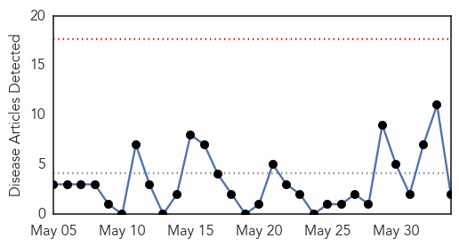
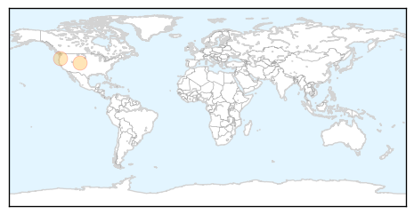
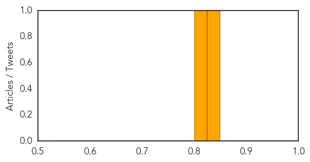
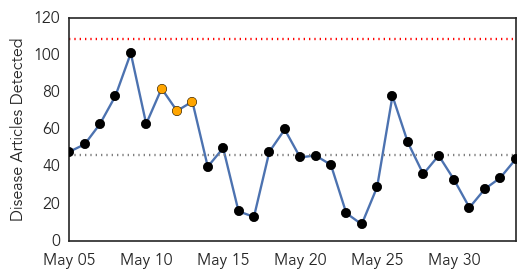
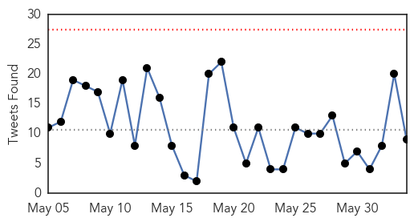
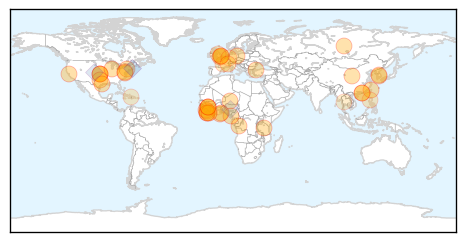
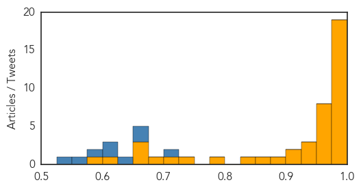

Meningitis
30-Day Web Trend
0 alerts, 0 warnings

30-Day Twitter Trend
1 alerts, 0 warnings

Article Locations
Article Confidences
Top Articles:
Top Tweets:
-
No tweets found for Jun 03, 2015
Ebola
30-Day Web Trend
0 alerts, 3 warnings

30-Day Twitter Trend
0 alerts, 0 warnings

Article Locations
Article Confidences
Top Articles:
- 1.000
- How dangerous are they?
- 1.000
- An unprecedented year of the largest Ebola outbreak
- 1.000
- Ebola Diaries From Denial and Fear to Action
- 1.000
- Ebola activity heats up as West Africa's rainy season begins
- 1.000
- Virulent Viruses: Ebola, Chikungunya, and MERS: Year In Review 2014
- 0.999
- WHO Declares Ebola Outbreak in Liberia Officially Over
- 0.998
- News Scan for Jun 02, 2015
- 0.998
- Scientists Release Ebola Sequencing Data to Global Research Community Online
- 0.995
- Ebola outbreak thrusts MSF into new roles
- 0.994
- Study: Well-known Common Drugs May Block Ebola
- 0.994
- Ban Ki-moon urges final push on Ebola
- 0.992
- Why didn’t Ebola spread inside this Dallas apartment?
- 0.992
- WHO strengthens capacities of national blood transfusion systems in Ebola-affected countries - Sierra Leone
- 0.992
- Ban to convene international Ebola recovery conference in New York
- 0.989
- South Korea's efforts against MERS adequate but late: CDC physician
- 0.988
- UN Chief to convene Ebola recovery conference next month
- 0.986
- Outrage over Ebola vaccine trial
- 0.985
- The Economist explains: What zoonotic diseases are, and how to stop them
- 0.977
- Transparency, teamwork key to beating deadly South Korea MERS outbreak
- 0.975
- Korean authorities 'may be making the Mers outbreak worse', says Hong Kong expert on Sars
- 0.970
- The Other Ebola Battle: Fair Pay for Local Workers
- 0.968
- Chinese envoy calls for relentless efforts toward Ebola's eradication
- 0.968
- G7: The world is no better prepared today than a year ago to respond to Ebola - World
- 0.967
- UN AND AFRICA: Hunger reduced in Africa, youth employment, Ebola not over yet.
- 0.966
- Along ‘Last Mile' of Ebola Response, Secretary-General Warns Assembly: Investments, Sacrifices Could Be Lost Unless ‘We Complete the Job'
- 0.965
- Turns out, Ebola treatments are likely in our pharmacies—so why aren’t we using them?
- 0.964
- FDA holds meeting on Ebola vaccination trials
- 0.949
- Twitter Announced Ebola Spread before Official Channels
- 0.944
- (EDITORIAL from Korea JoongAng Daily on June 4)
- 0.928
- US Envoy assures Health Minister of Permanent Support
- 0.913
- A new lease on life: Realty assistant aids Ebola response efforts in Liberia
- 0.910
- (EDITORIAL from Korea Times on June 4)
- 0.893
- MERS, the Korean Government and Its 'Ghost Stories'
- 0.860
- Nigerian Scientist Presents Ebola Vaccine Report In France
- 0.836
- Nature News & Comment
- 0.778
- CDC Disease Detective Describes His Ebola-Response Experience
- 0.731
- Health Dept. confirms 103 monitored in VA for Ebola risk
- 0.711
- Government lifts deployment ban to Liberia
- 0.686
- In CAR, data is not enough
- 0.665
- Researchers discover two new groups of viruses
- 0.661
- NHS Staffing Issues Are Part of a Wider Global Crisis
- 0.660
- Virtual Reality Film Aims to Raise Funds by Giving Nepal Quake Experience
- 0.605
- SCANDAL: Nigerian volunteers to Sierra Leone, Liberia locked up in hotel over unpaid bills
- 0.598
- WHO Reports Significant MERS Outbreak in South Korea
Top Tweets:
- 0.923
- ExxonMobil & NOCAL Gives $162K to Post-Ebola Efforts - Front Page Africa http://t.co/o41Sn8zFsn ebola EVD
- 0.886
- FDA holds meeting on Ebola vaccination trials - GhanaWeb http://t.co/0meGjyHsFW ebola EVD
- 0.869
- Seeking Answers in the Spread of Ebola in West Africa http://t.co/wSJcC3WS0B via
- 0.868
- Health Dept. confirms 103 monitored in VA for Ebola risk - WWBT NBC12 News http://t.co/d1MrRYdeGr ebola EVD
- 0.855
- Why didn't Ebola spread inside this Dallas apartment? - Dallas Morning News (blog) http://t.co/haHIxHjtqx ebola EVD
- 0.846
- Ebola : l'@ONU appelle à rester mobilisé jusqu'à l'éradication totale de l'épidémie: http://t.co/9kFK6Qemvm
- 0.820
- An antidepressant and a heart disease drug both protect mice against Ebola - The Verge http://t.co/espaSOKlkX ebola EVD
- 0.787
- Ebola outbreak thrusts MSF into new roles - http://t.co/z2Rjnutn9L http://t.co/Vquh7N3grU ebola EVD
- 0.775
- 2 June - news pouch on avianflu avianinfluenza Ebola EbolaResponse MERS NepalQuake http://t.co/74HCN3xznw
- 0.742
- People were talking about the Ebola epidemic on Twitter three days before health officials http://t.co/f74aHzpu0C via
- 0.735
- Liberia tackles measles as the Ebola epidemic comes to an end http://t.co/Fu5Gq5LAjO
- 0.724
- What tools, pls, Jake? Repurposed drugs? MERS vaccine is far behind Ebola vaccine, which was too slow.
- 0.705
- This is what happens when you bring a robot to an Ebola ward - BetaBoston http://t.co/spLqR67rzf ebola EVD
- 0.696
- Several Ebola Orphans Get New Shelter in Lofa County > Gorlu - Front Page Africa http://t.co/ZHew45KRhL ebola EVD
- 0.686
- Why Isn't Guinea-Bissau Prepared for Ebola? - http://t.co/NaiI6Jl8yj http://t.co/es9qhZ4kM6 ebola EVD
- 0.680
- LISTEN: Ebola outbreak in West Africa "not yet over", says UN envoy http://t.co/rmRJ6cavJH http://t.co/tCWRK9wZVR
- 0.667
- The Ebola outbreak in West Africa is not over yet. WHO EbolaResponse in action: R&D http://t.co/yQthY6n5YO http://t.co/DcPePA9S60
- 0.665
- Want the latest figures on the Ebola outbreak? @WHO has the info here: http://t.co/LHQDV7huZU
- 0.665
- Ebola: investimentos podem ser perdidos se "trabalho não for concluído" http://t.co/QYAGlCwcOs
- 0.659
- From today's Situation Report-> 25 new Ebola cases in Guinea & SierraLeone during week to 31 May https://t.co/4c9KAwmvxj EbolaResponse
- 0.641
- RT: The Ebola outbreak in West Africa is not over yet. WHO EbolaResponse in action: R&D http://t.co/yQthY6n5YO http://t.co/DcPePA9S60
- 0.641
- RT: The Ebola outbreak in West Africa is not over yet. WHO EbolaResponse in action: R&D http://t.co/yQthY6n5YO http://t.co/DcPePA9S60
- 0.641
- Cop shooting, Ebola scare in Atlanta invented by Russians: Report - Atlanta Journal Constitution http://t.co/NYDxtz1J5j ebola EVD
- 0.630
- 10 Lessons for Stronger HealthInformationSystems in Ebola-Affected West Africa http://t.co/bjtprNQwEa
- 0.617
- Humanitarian Bulletin Liberia: Ebola Response and Recovery https://t.co/eI6VY3tZE5
- 0.599
- RT: Ebola activity heats up as West Africa's rainy season begins http://t.co/8bJuQd7GRX
- 0.572
- Ebola : l'@ONU_fr appelle à rester mobilisé jusqu'à l'éradication totale de l'épidémie https://t.co/FQVX85MiIj http://t.co/H274zTwmST
- 0.564
- RT: It's not over: 25 Ebola cases in the wk ending May 31. Worrying fact: some cases weren't part of known chains: @WHO ht…
- 0.559
- Nigerian Scientist Presents Ebola Vaccine Report in France - http://t.co/NaiI6Jl8yj http://t.co/ciOkoPFRZS ebola EVD
- 0.547
- We haven't reached the finish line yet. Ebola cases in W. Africa (SierraLeone & Guinea) double from last week http://t.co/WfHeGukQB8
- 0.526
- Want to stay up to date on all things MERS, Anthrax, Flu, Ebola? Sign up for Health Security Headlines here: http://t.co/dj2QYi5nUF